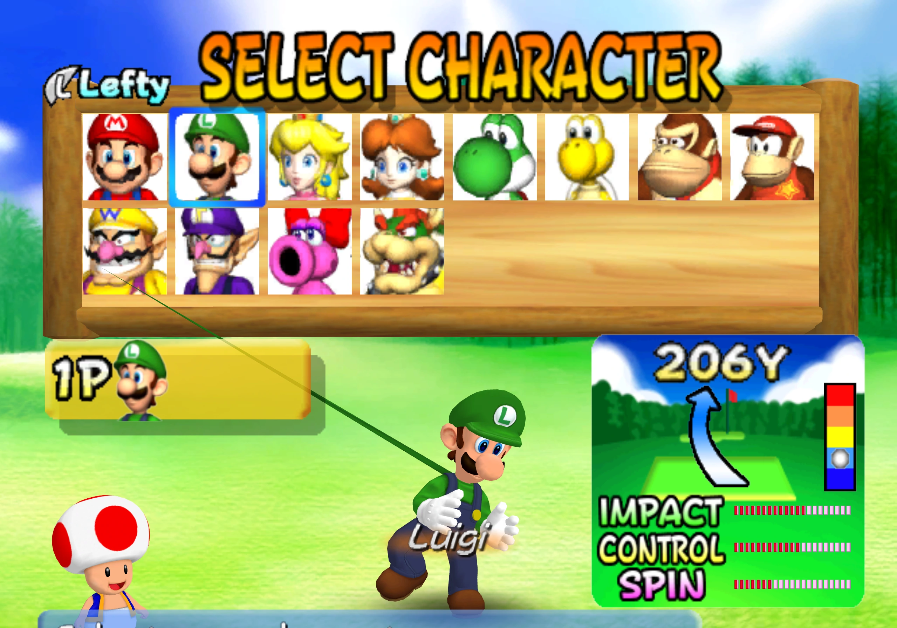
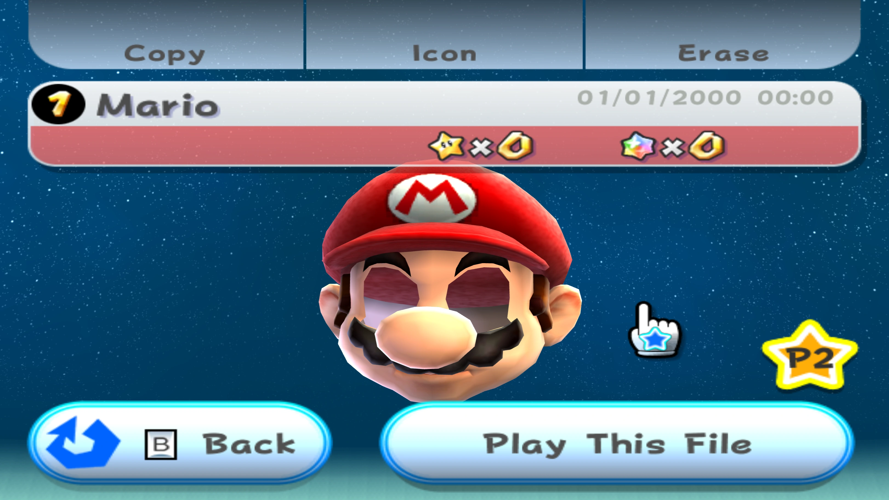
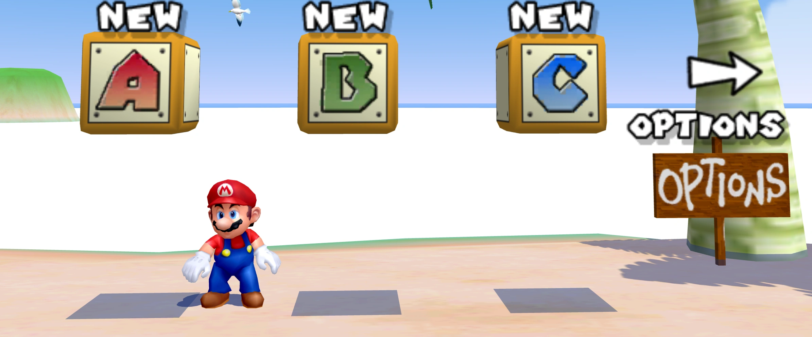
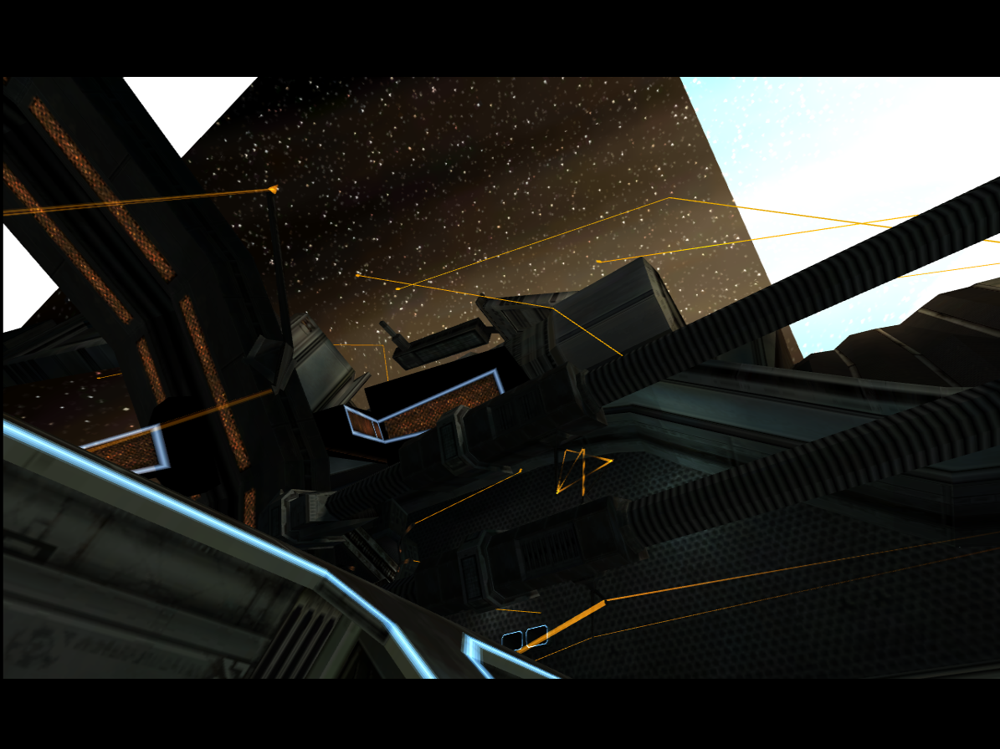
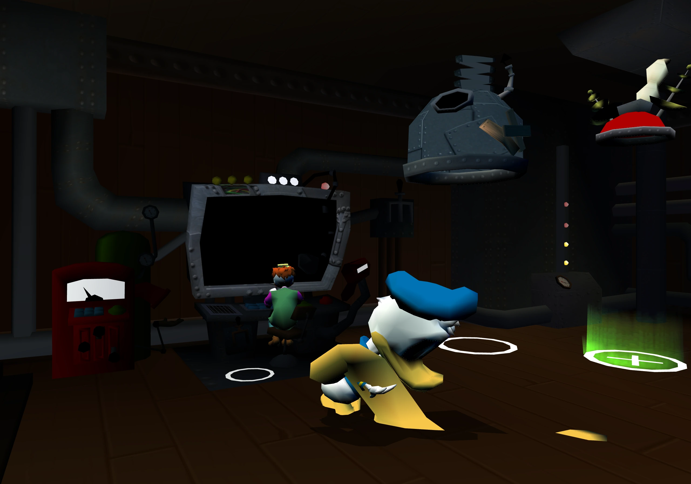

Games
(mostly?) fixes for game issues in Gecko
Mario Golf: Toadstool Tour
Triangle Out of Luigi's Hand

Thin triangle stretching from Luigi's hand across the character selection menu (look between Luigi's hand and Wario's portrait).
The affected triangle strip ended with a skip record (position index 0xFF). I fetched a position for it anyway and interpreted unrelated memory as:
[-27.166016, 15.875, 0.0]
Transforming that point and connecting it to the previous 2 corners produced the spike. A skipped record doesn't occupy a corner in the strip, so 0, 1, SKIP, 2, 3 should give the same quad as 0, 1, 2, 3.
Fix: remove skipped records before vertex decoding and update the vertex count for each draw, see Vertex Skip.
Writeup: vertex-skip: The Case of Luigi's Extra Triangle
Tops of Signs Missing
Upper parts of the player selection signs (just below "MAIN MENU") are covered by the sky, with a straight cutoff. Geometry is all there, a later draw paints over it.
The menu does this:
- Draw a small shape to establish a depth plane
- Enable z-freeze
- Draw the sky over the top 112 framebuffer rows using that saved plane
Without z-freeze the sky uses its own near depth and covers the signs. That draw ends at row 112, hence the straight cutoff.
Saved plane:
Z24 = 2.650141y + 16'755'356
At pixel (100, 80) on Mario's sign:
stored depth 16'641'130
sky, own depth 0 -> 0 <= 16'641'130 passes, sky covers sign
sky, frozen plane ~16'755'569 -> fails, sign stays visible (y = 80.5, pixel center)
background 16'777'215 -> 16'755'569 <= 16'777'215 passes, sky fills background
Writeup: z-freeze and Mario Golf's Disappearing Menu
Mario Power Tennis
Flickering Floor Decals
Floor logos on the Plaza court flicker / have missing bands. Decals have nearly the same depth as the floor below them, so rounding differences make them take turns winning the depth test (Z-fighting). Sharing a depth plane via z-freeze keeps the comparison consistent.
Super Mario Galaxy
Missing Eyes

Mario's eyes missing on the file selection screen. The head is its own model, FileSelectDataMario, eyes use material EyeMat_v (blink animations swap its texture, see Petari).
Eye triangles are there, but every fragment fails the alpha test (blending disabled):
128 <= alpha <= 255
The open-eye texture is 64x64, every texel has alpha 255, so the texture isn't the problem.
TEV stages of the material:
- Stage 0 calculates an intermediate lighting value in alpha
- Stage 1 uses that value for color, then replaces alpha with 255
- Stage 2 adds a quarter of the texture alpha and a half bias, clamping disabled
alpha = 255 + 64 + 128 = 447
447 & 0xFF = 191 -> 128 <= 191 <= 255 passes
Quarter contribution: floor((255 * 64 + 128) / 256) = 64. The +128 is TEV's rounding step, not the bias (both just happen to be 128).
My old float shader did:
alpha = 1.0 + 1.0 * 0.25 + 0.5 = 1.75 -> 1.75 <= 1.0 fails
The upper bound looks redundant for an 8-bit value but isn't once a wider value reaches the comparison. Note: clamping 447 also passes (255), but that's the wrong rule. E.g. 383 wraps to 127 (fail) whereas clamping gives 255 (pass).
The decisive part of the fix is wrapping the final alpha before alpha_compare:
fn tev_wrap_alpha(value: f32) -> f32 {
return f32(i32(round(value * 255.0)) & 255) / 255.0;
}
tev_wrap_alpha(state.regs[state.last_alpha_dest].a)
Integer arithmetic alone still leaves 447 going into the test. Adding just the helper to the old float math gives 190, the full integer calculation 191. Both pass, so the eyes coming back doesn't prove the arithmetic is right. See TEV Wrapping.
Zayd's video: The Emulator Bug that Removes Mario's Eyes
Writeup: Mario's Missing Eyes and Sunshine's White Ocean
Super Mario Sunshine
White Ocean

Ocean on the save selection screen is completely white. Material _mat1_1 in the menu's map.bmd draws a wave layer over the water that's already there. It reads the grayscale texture HAYAwave2 twice at different scales/offsets, intensity supplies alpha.
alpha (A, B, C, D):
stage 0: (ZERO, ZERO, ZERO, TEXA)
stage 1: (ZERO, TEXA, APREV, RASA) scale 2x, clamp off
stage 2: (ZERO, RASA, APREV, ZERO) clamp off <- APREV read as C
RASA is 255. Example pixel with texture samples 93 and 121:
q = floor((2 * 121 * 93 + 128) / 256) = 88
alpha = 2 * 255 + q = 598
C = 598 & 0xFF = 86
The C input only keeps 8 bits. Stage 2's multiply by raster alpha preserves the 86. Alpha test accepts everything, blending is on: source factor SrcAlpha, destination SrcClr with white RGB, so it's additive brightening:
new channel = min(1, b + 86/255)
Old Gecko carried the wide value into stage 2, the constant alone was 2 * 1.0 = 2.0, saturating the water to white. Clamping would also be white, only the low byte recovers the varying wave intensity.
Note: TEV expands the C factor to C + (C >> 7) before multiplying so 255 represents exactly 1. 93 is below 128 so unchanged.
Trap: wrapping only at the final output also looks almost right (88 instead of 86) because stage 2 already did math on the wide C. Needs integer math + input wrapping. See TEV Wrapping.
Writeup: Mario's Missing Eyes and Sunshine's White Ocean
Honorary mention: neobrain, Zayd
Metroid Prime
Huge Triangles in the Sky

Bright triangles covering the sky during the station flyby (skinned models in general). Originally debugged in Lazuli, the screenshot reproduces it in Gecko by disabling the WPAR reset.
Skinning results get written through the gather pipe into RAM (CSkinnedModel::Calculate, allocation/cache/morphing omitted):
pipe = GXRedirectWriteGatherPipe(verts);
BuildAccumulatedTransforms(pose, layout);
BuildPoints(pipe);
// Pad the position region to a multiple of 32 bytes.
BuildNormals(pipe);
GXRestoreWriteGatherPipe();
CVirtualBone::BuildPointssmall-count path writes X, Y, Z through the same pointer without incrementing (it's the gather port)GXRedirectWriteGatherPipeflushes, waits for transfers, rewrites WPAR (same0x0C008000), disconnects the FIFOs, saves the old PI write pointer and points PI at the workspace- GX later reads the arrays with base address + stride
The affected pass had 23 zero bytes pending when redirecting. Without the WPAR reset they became the start of the new workspace:
reset offset bytes
---------------------------------------------------
yes 0 3E A0 F9 08 3E 39 E0 1A ...
no 0-22 00 ... 00 (23 zeros)
no 23 3E A0 F9 08 3E 39 E0 1A ...
All 4'224 bytes match when shifted by 23. Data was right, stored in the wrong place. GX reads with stride 12 (3 floats), array index 12:
axis reset no reset
-----------------------------------------
X 0.106061 0.00956970
Y 0.183704 -3.21470e15
Z 0 8.68805e-44
Broken Y is D9 36 BC 00: negative, exponent 178 -> 2^(178-127) = 2^51. Huge before projection already, same shift also breaks the normals (lighting).
Writeup: WPAR: Why Metroid Prime's Geometry Exploded
Honorary mention: vxpm
Disney's Donald Duck: Goin' Quackers
Donald's Feet Explode

Donald's idle animation in the laboratory starts fine, then his feet stretch and his body folds into itself. Left running, triangles cover the whole room. Same with JIT and interpreter.
Positions were already wrong in RAM (CPU skinning), so GX was fine. Worked back: vertex writes -> bone matrices -> animation keyframes -> keyframe records loaded from ARAM via DMA.
Records are 24 bytes, so most aren't 32-byte aligned. The game requests 64 bytes around the record and picks it out in the completion callback, using the original unaligned address. Record at 0x7888:
- DMA ignores the low 5 bits, copies from
0x7880 - Callback: record is 8 bytes into its block
- Callback skips 8 bytes and copies 24
I didn't mask the DMA registers, so DMA started at 0x7888 and the callback skipped another 8:
expected: B + r
gecko: (B + r) + r = B + 2r
Offsets go 16, 8, 0, 24 and repeat, so 1 in 4 records still worked. At 8/16 the extracted bytes straddle 2 records, at 24 it reads the next record entirely.
From bytes to a broken bone (example with the game's rules):
- Time 33.54, current keyframe 25, next keyframe 0 ->
t = (33.54 - 25) / (0 - 25) ≈ -0.3416(extrapolating) - Slerp uses a stored angle and a sine table (4'096 entries per turn). Record says 113 units (~0.17334 rad), but the quaternions are actually
arccos(0.70769) ≈ 0.78457rad apart k = trunc(0.5 + t*N) = -38, weightsa = sin(151π/2048) / sin(113π/2048) ≈ 1.33102,b = sin(-38π/2048) / sin(113π/2048) ≈ -0.33778|q|² = a² + b² + 2ab(q0·q1)->|q| ≈ 1.118instead of 1- Quaternion-to-matrix doesn't normalize -> bone stretches, propagates to children -> skinning
Every calculation did what it was supposed to, the bytes were just wrong.